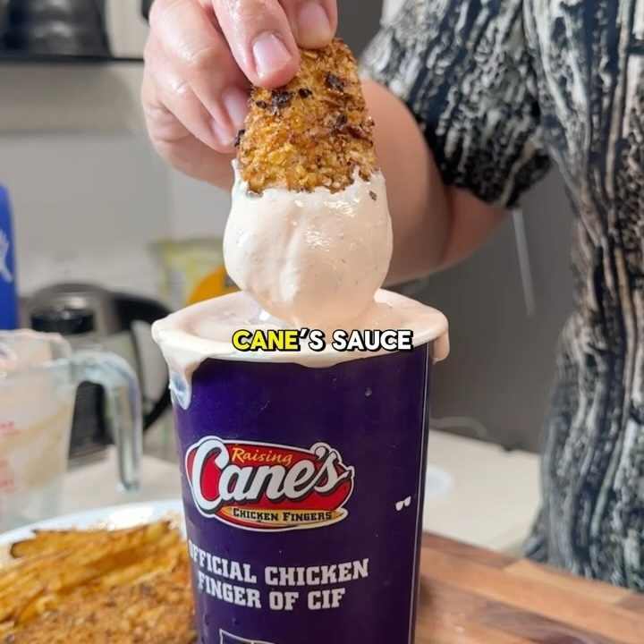

Salsa Cane's
Ingredientes:
Instrucciones:
1/2 taza de yogur griego natural sin grasa
1/4 taza de ketchup sin azúcar
1 cucharadita de salsa Worcestershire
1/2 cucharadita de pimienta negra
1/2 cucharadita de sal de ajo
Licuar los ingredientes
Vea la receta completa aquí